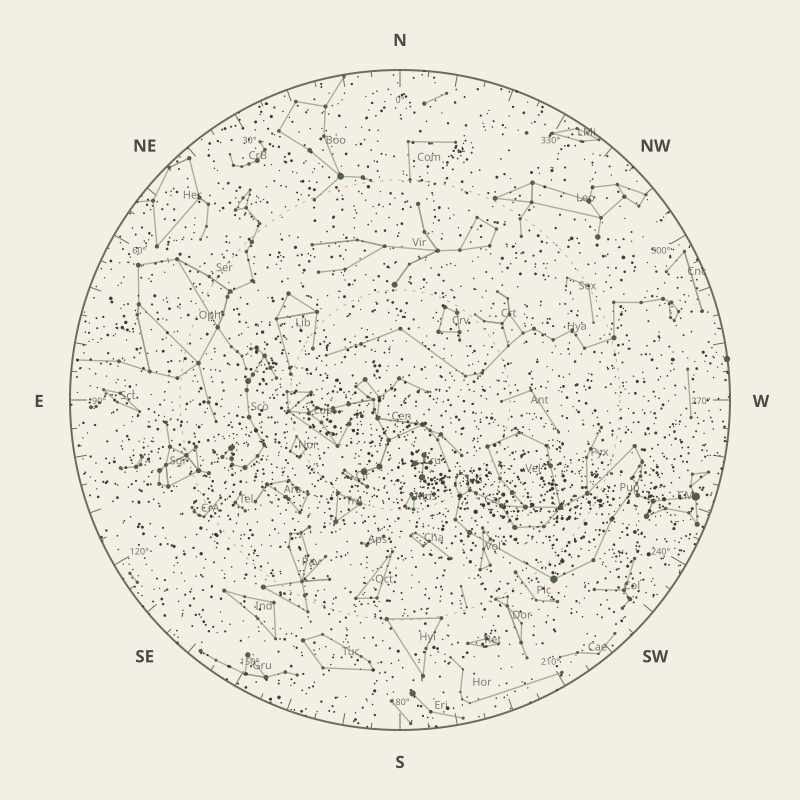

← Annual almanac


North is at the top; east is at the left. Solar System objects shown are above the horizon at 10 pm.
Monthly field almanac
May 2026
Galactic Centre viewing is best on 19 May 2026, from 8:19 pm to 6:47 am, reaching 76°.
- New Moon
- 17 May Darkest skies
- Full Moon
- 2 May Brightest skies
- Best dark window
- 20 May 13h 20m
Current conditions
Checking the sky near Southern Tasmania, Australia…
Sky chart: 15 May 2026, 10 pm
Southern Tasmania, Australia local time.
Show static monthly chart

Night planner
Choose a date to see astronomical darkness, Moon interference, Galactic Centre visibility, and planet altitudes and times.
Best low-Moon dark periods this month
- 5:28 pm–6:48 am13h 20m · 16% Moon
- 5:29 pm–6:47 am13h 18m · 9% Moon
- 5:29 pm–6:46 am13h 17m · 3% Moon
May highlights
- Milky Way
Milky Way core window
7h 00m with 76° altitude.
- Planets
Neptune
Best monthly date at 45° altitude.
- Occultations
HIP 73927 lunar occultation
8:39 pm to 9:45 pm; Moon at 37° altitude for the first listed contact.
- Meteor showers
Eta Aquariids
Peak conditions: 88% Moon illumination; 24° altitude predawn.
- Milky Way
Milky Way core window
10h 13m with 76° altitude.


Moon phases
99%
74%
10%
36%
94%
Low illumination favours faint targets. Bright lunar targets are best near full Moon.
Download Moon phase CSV →

Galactic Centre sessions
- 8:18 pm–6:48 am10h 30m · core to 76°
- 8:19 pm–6:47 am10h 28m · core to 76°
- 8:19 pm–6:46 am10h 27m · core to 76°


Planet visibility
Evening
- Jupiter5 May · 5:30 pm24° · Fair
- Venus31 May · 5:30 pm12° · Poor
- Uranus5 May · 5:30 pm4° · Poor
Predawn
- Neptune31 May · 7:00 am45° · Excellent
- Saturn31 May · 7:00 am40° · Good
- Mars18 May · 7:00 am20° · Fair
- Mercury1 May · 6:30 am8° · Poor
Events
- HIP 73927 lunar occultation8:39 pm to 9:45 pm; Moon at 37° altitude for the first listed contact.
- Eta AquariidsPeak conditions: 88% Moon illumination; 24° altitude predawn.
- HIP 77858 lunar occultation6:52 pm to 7:35 pm; Moon at 12° altitude for the first listed contact.


Data and downloads
Positions are unavailable for 2 comet entries.
Occultation times use a smooth lunar limb; confirm grazing events with IOTA Occult 4.